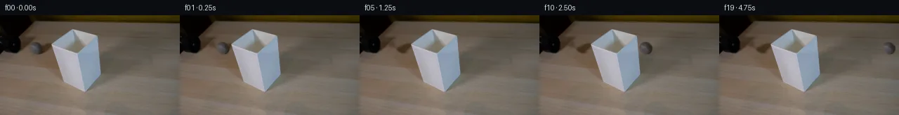

![首帧]()

Round 00
2026-11-05T06:42:09.700721+00:00像素候选变化代码 +178/−0inspection 更新
pixels b27dacdcb721e69e · code 92128a2d1059d60f
查看本轮 generate.py 真实 diff
--- previous/generate.py +++ current/generate.py @@ -0,0 +1,178 @@ +#!/usr/bin/env python3 +"""Generate the 20-frame locked-camera ball-roll continuation.""" + +from pathlib import Path + +import cv2 +import numpy as np +from PIL import Image, ImageDraw + +import artifact_io + + +ROOT = Path(__file__).resolve().parent +W, H = 256, 144 +BALL_X0, BALL_Y = 51.0, 47.0 +RADIUS = 9.5 + + +def make_clean_plate(first: np.ndarray) -> np.ndarray: + """Remove the source ball/shadow while preserving the horizontal wood grain.""" + yy, xx = np.mgrid[0:H, 0:W] + ball = ((xx - BALL_X0) / 11.0) ** 2 + ((yy - BALL_Y) / 10.8) ** 2 <= 1.0 + shadow = ((xx - 57.0) / 14.5) ** 2 + ((yy - 55.0) / 5.0) ** 2 <= 1.0 + mask = ((ball | shadow) * 255).astype(np.uint8) + # Telea interpolation is well suited to this narrow patch of nearly horizontal grain. + return cv2.inpaint(first, mask, 3.0, cv2.INPAINT_TELEA) + + +def make_shade_mask() -> np.ndarray: + """Conservative foreground silhouette, including a 1 px edge safety band.""" + mask = np.zeros((H, W), np.uint8) + outline = np.array( + [[103, 19], [136, 36], [145, 94], [120, 113], [95, 97], [72, 42]], + dtype=np.int32, + ) + cv2.fillPoly(mask, [outline], 255) + return cv2.dilate(mask, np.ones((3, 3), np.uint8), iterations=1) > 0 + + +def make_source_ball(first: np.ndarray): + """Extract the photographed ball's fixed illumination and make a feathered alpha.""" + size = 25 + half = size // 2 + cx, cy = int(BALL_X0), int(BALL_Y) + rgb = first[cy - half : cy + half + 1, cx - half : cx + half + 1].astype(np.float32) + sy, sx = np.mgrid[-half : half + 1, -half : half + 1] + rr = np.sqrt(sx * sx + sy * sy) + alpha = np.clip((RADIUS + 0.75 - rr) / 1.35, 0.0, 1.0).astype(np.float32) + + # Fine deterministic felt variation. Only this low-amplitude field rotates; the + # photographic highlight and shading remain fixed relative to the lamp. + rng = np.random.default_rng(147) + felt = rng.normal(0.0, 1.0, (size, size)).astype(np.float32) + felt = cv2.GaussianBlur(felt, (0, 0), 0.55) + felt /= max(float(felt.std()), 1e-6) + return rgb, alpha, felt + + +def overlay_shadow(frame: np.ndarray, cx: float, cy: float) -> None: + """Composite a soft cast/contact shadow on the tabletop.""" + yy, xx = np.mgrid[0:H, 0:W] + broad = np.exp(-0.5 * (((xx - (cx + 4.5)) / 7.2) ** 2 + ((yy - (cy + 8.0)) / 2.25) ** 2)) + contact = np.exp(-0.5 * (((xx - (cx + 1.5)) / 4.7) ** 2 + ((yy - (cy + 7.6)) / 1.15) ** 2)) + alpha = np.clip(0.115 * broad + 0.095 * contact, 0.0, 0.22)[..., None] + work = frame.astype(np.float32) + # Warm, low-opacity shadow rather than a neutral black stamp. + shadow_colour = np.array([46.0, 39.0, 33.0], dtype=np.float32) + work[:] = work * (1.0 - alpha) + shadow_colour * alpha + frame[:] = np.clip(work + 0.5, 0, 255).astype(np.uint8) + + +def overlay_ball( + frame: np.ndarray, + source_rgb: np.ndarray, + source_alpha: np.ndarray, + felt: np.ndarray, + cx: float, + cy: float, + frame_no: int, +) -> None: + """Place a source-matched ball with subtly rotating felt texture.""" + size = source_alpha.shape[0] + half = size // 2 + x0, y0 = int(round(cx)) - half, int(round(cy)) - half + + angle_deg = -np.degrees((cx - BALL_X0) / RADIUS) + matrix = cv2.getRotationMatrix2D((half, half), angle_deg, 1.0) … diff truncated; 91 more lines …